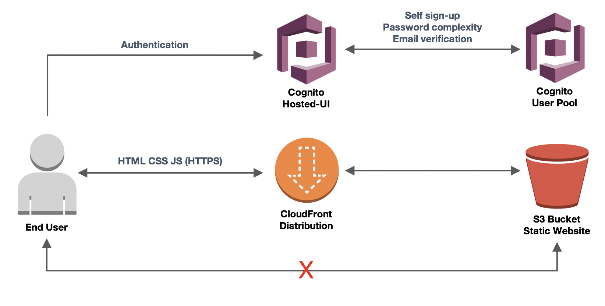

サーバーレス アイデンティティ ラウンド タスク 2
構築フェーズ アプリケーションのユーザ管理を設定する
Cognito ユーザープールを使用して、アプリケーションのユーザー管理を設定します。認証用フォームとカスタムロジックの作成工数や、運用負荷を削減するために、Cognito の Hosted UI 機能を使用してアプリケーションをユーザープールに統合していくことに決定しました。
ユーザーエクスペリエンス向上の一環として、ユーザーは自分自身をサインアップできる必要があります。また、ユーザーは自分の電子メールアドレスを検証し、セキュリティ標準に準拠するために、パスワードの複雑さの要件を満たすパスワードを作成する必要があります。
アプリケーションで使用するパスワードの複雑さについての要件
- 最小文字数10文字
- 記号を含める
- 数字を含める
- 大文字を含める
アプリケーション統合の要件
- OAuth フロー：暗黙的な付与
- OAuth スコープ： email openid
- 認証が成功すると、ユーザは ride.html にリダイレクトされる
ユーザープールの設定
- Amazon Cognito コンソール (us-east-1) に移動します。
- ユーザープールの管理 をクリックしてから、WildRydes プールをクリックします。
- 左のナビゲーションで ポリシー をクリックしてパスワードポリシーを変更し、ユーザーに自己サインアップを許可するようにしてから、変更の保存を行います。
- 左のナビゲーションで MFA そして確認 をクリックし、どの属性を確認しますか？ のセクションでEメールの確認を有効にして、変更の保存を行います。
アプリケーション統合の設定
-
左のナビゲーションで アプリクライアントの設定 をクリックし、次のように入力して 変更を保存 をクリックします。
- 有効なIDプロバイダー : Cognito User Pool
- コールバック URL : <WebsiteCloudFrontURL>/ride.html
- サインアウト URL: <WebsiteCloudFrontURL>/index.html
- 許可される OAuth フロー : Implicit Grant
- 許可される OAuth スコープ : email openid
※注意：
には https:// も含めて設定してください -
左のナビゲーションでドメイン名 をクリックし、一意のドメイン名を入力して、使用可能かチェックを行った後、変更の保存を行います。
Hosted-UI の URL の作成
ユーザープールとアプリ統合が設定できたので、Cognito の Hosted UI (ユーザーのサインアップとサインイン用の組み込みウェブページ) を使用して、ユーザーがサインインできる URL を作成できます。
<your_domain>/login?response_type=<code or token>&client_id=<your_app_client_id>&redirect_uri=<your_callback_url>
ヒント
<> 内の値を正しい値に置き換えてください ("<"や">"自体を含む) 。置き換える値はすべて Cognito の設定に記載されています。response_typeは OAuth フローに基づいて設定します ( 今回は “token” )。
-
S3 console に移動し、次の名前のバケットをクリックします。
identity-wksp-serverless-<ACCOUNT#>-us-east-1-wildrydes.
-
index.html をダウンロードして開き、Hosted UI の URL を Giddy Up (進む) ボタンに追加します。
- index.html を S3 バケットにアップロードします。
検証フェーズ アプリケーションのユーザ管理を設定する
ここまでで、アプリケーションにアイデンティティコントロールが追加されました。あなたはエンドユーザーとして手動テストを行い、コントロールが正しく導入され、要件が満たされていることを確認する必要があります。
確認チェックリスト
-
Giddy Up (進む) をクリックすると、Hosted UI の画面が表示されます。
-
サイトに自分でサインアップすることができます。
-
以下のような複雑さを備えるパスワードを作成する必要があります。
- 最小文字数10文字
- 記号を含める
- 数字を含める
- 大文字を含める
-
自分の電子メールアドレスを検証する必要があります。
-
認証後、ride.html にリダイレクトされ、JWT IdToken が表示されます。
最終的なアーキテクチャ

クリーンアップ
アカウントへの請求を防ぐために (他のアイデンティティラウンドを行っている場合は特に)、ここで作成したインフラストラクチャをクリーンアップすることをお勧めします。以下のセクションのいずれかの指示に従ってください。
AWS 主催のイベント
クリーンアップは必要ありません。AWS が実施します。
個人アカウント利用時
一部のリソースは CloudFormation スタックを削除する前に手動削除する必要があります。以下のステップを順番に実行してください。
-
Hosted UI の Amazon Cognito ドメインを削除します。
- Amazon Cognito コンソールに移動します。
- WildRydes プールをクリックします。
- アプリ統合 の下の左のナビゲーションで、ドメイン名 をクリックします。
- ドメインの削除 をクリックします。
- 確認チェックボックスをクリックし、ドメインの削除 をクリックします。
-
CloudFormation スタック (Identity-RR-Wksp-Serverless-Round) を削除します。
- AWS CloudFormation コンソールに移動します。
- スタックを選択します。
- 削除 ボタンをクリックし、確認画面でスタックの削除 をクリックします。
おめでとうございます！ これでサーバーレス アイデンティティラウンド が無事完了しました。